Angkor Sunrise
Location: 5km North of Siem Reap
Open: 5:00 AM – 5:30 PM
Uniqueness: The world's largest religious monument.
Angkor Travels
Discover iconic destinations, culture, beaches, mountains, and unforgettable experiences across the Kingdom of Wonder.
Click a destination and unlock hidden gems, unforgettable moments, and amazing places to visit.

Temple Kingdom
Ancient wonders, culture, and magical sunrise moments.
Siem Reap: The Gateway to Antiquity
Siem Reap is the cultural heartbeat of Cambodia, where the grandeur of the ancient Khmer Empire
meets a bustling, modern hospitality scene. As home to the legendary Angkor Archaeological Park,
it offers a journey back in time through towering stone faces and intricate bas-reliefs. Beyond
the temples, the province charms visitors with floating villages on the Tonle Sap, vibrant night
markets, and a world-class dining scene.
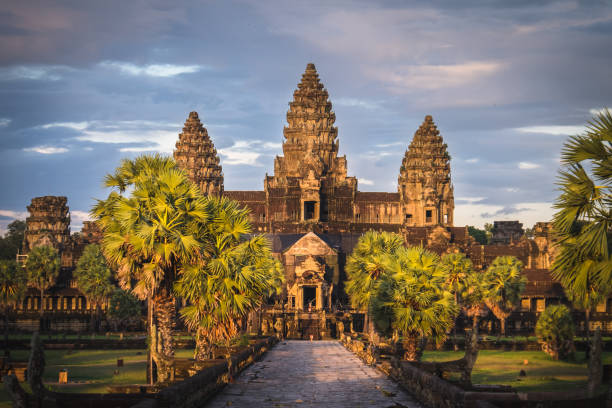
Location: 5km North of Siem Reap
Open: 5:00 AM – 5:30 PM
Uniqueness: The world's largest religious monument.
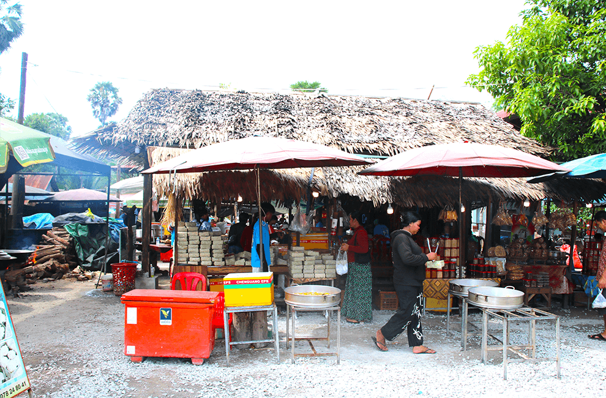
Location: Near East Baray
Open: 6:00 AM – 6:00 PM
Uniqueness: Famous for handmade palm sugar and Khmer noodles.
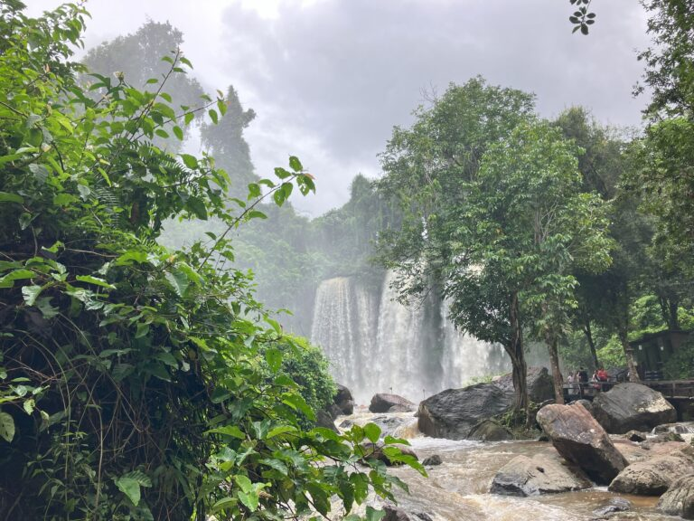
Location: 50km North of the city
Open: 7:00 AM – 5:00 PM
Uniqueness: Birthplace of the Khmer Empire with underwater carvings.

Capital Energy
History, skyline, food, and city lifestyle.
Phnom Penh: The Pearl of Asia
Phnom Penh is a captivating city of contrasts, where gold-roofed pagodas sit alongside sleek
skyscrapers and French colonial villas. Located at the "Chaktomuk" confluence of the Mekong and
Tonle Sap rivers, the capital is a hub of energy, history, and resilience. From Tuol Sleng to
the Royal Palace, it tells the story of a nation that has overcome its past to embrace a vibrant future.
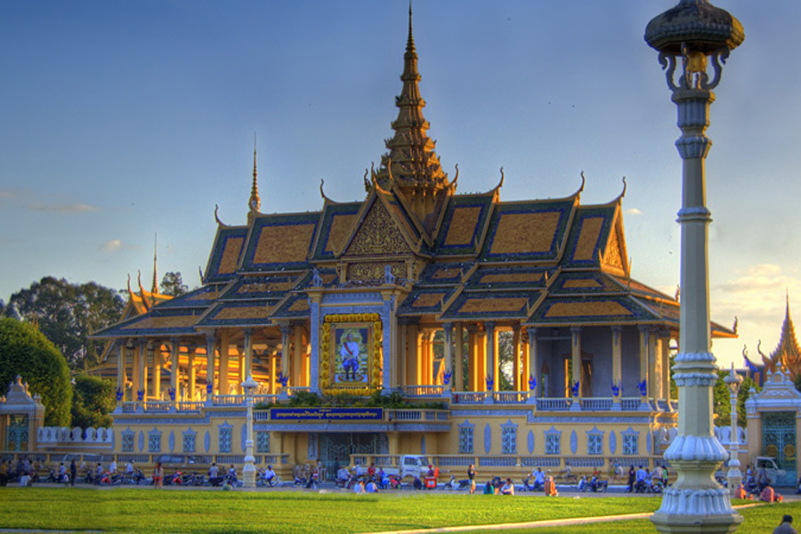
Location: Sothearos Blvd, Phnom Penh
Open: 8:00 AM – 11:00 AM / 2:00 PM – 5:00 PM
Uniqueness: Official residence of the King of Cambodia.
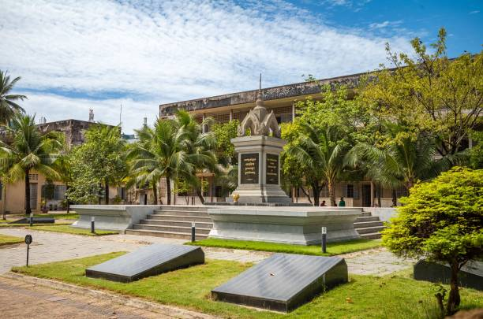
Location: Sangkat BKK3
Open: 8:00 AM – 5:00 PM
Uniqueness: Preserved former high school turned secret prison.
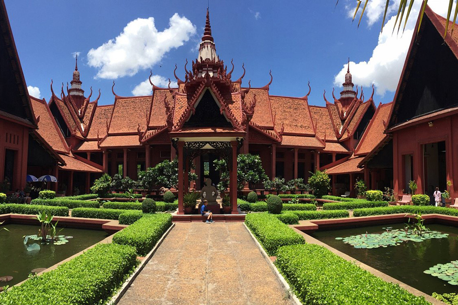
Location: Next to the Royal Palace
Open: 8:00 AM – 5:00 PM
Uniqueness: The finest collection of ancient Khmer sculpture.

Sea Escape
Island vibes, beaches, and sunset adventures.
Sihanoukville: The Coastal Frontier
Once a quiet port town, Sihanoukville has transformed into a dynamic gateway to Cambodia's most
stunning tropical treasures. Its true magic lies in the Koh Rong Archipelago — turquoise waters,
powdery white sands, and lush national parks like Ream.
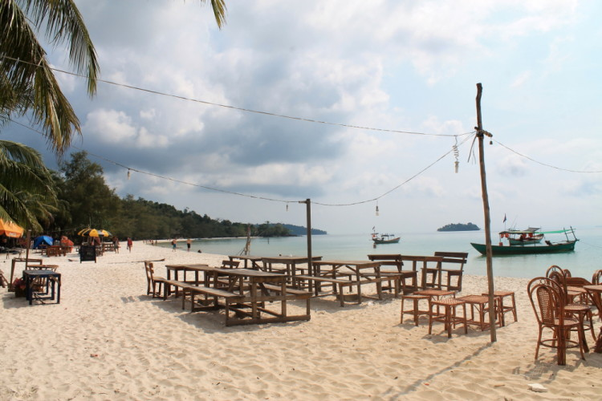
Location: 25km off the coast
Open: Ferries 8:00 AM – 4:00 PM
Uniqueness: Powder-white sands and glowing night plankton.
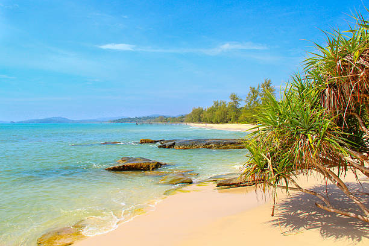
Location: Ream National Park
Open: 8:00 AM – 6:00 PM
Uniqueness: Secluded coast backed by dense mangroves.
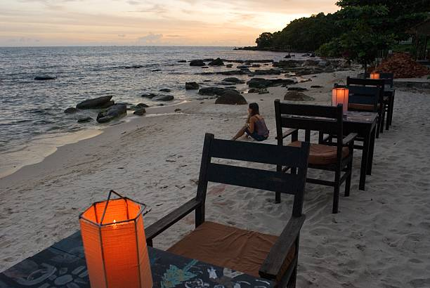
Location: South of Sihanoukville
Open: 24/7
Uniqueness: Famous, laid-back bohemian atmosphere.
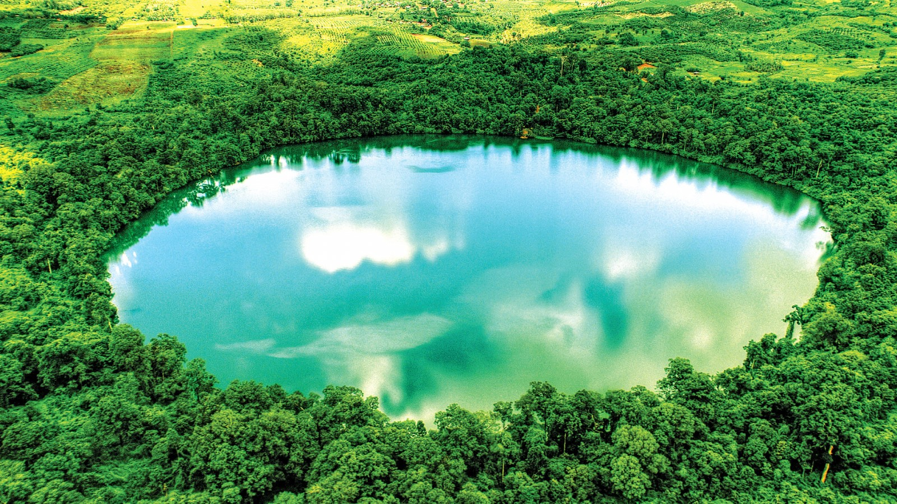
Wild Nature
Lakes, forests, waterfalls, and adventure.
Ratanakiri: The Wild Highland
For the traveler looking to go off the beaten path, Ratanakiri offers a rugged landscape of red
dirt roads, ancient volcanic lakes, and dense primary rainforests. This "gem-stone" province is
famous for the emerald Yeak Laom Lake and its rich indigenous culture.
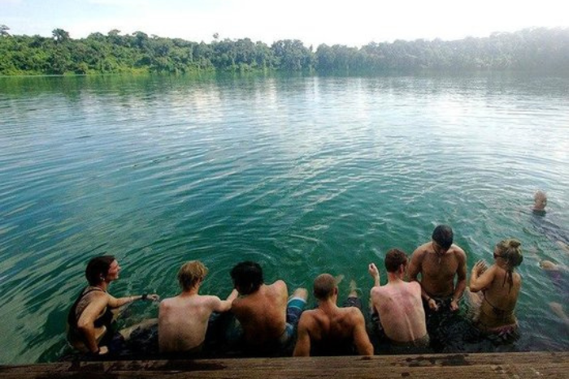
Location: 5km from Banlung
Open: 7:00 AM – 5:00 PM
Uniqueness: A 4,000-year-old volcanic crater lake.
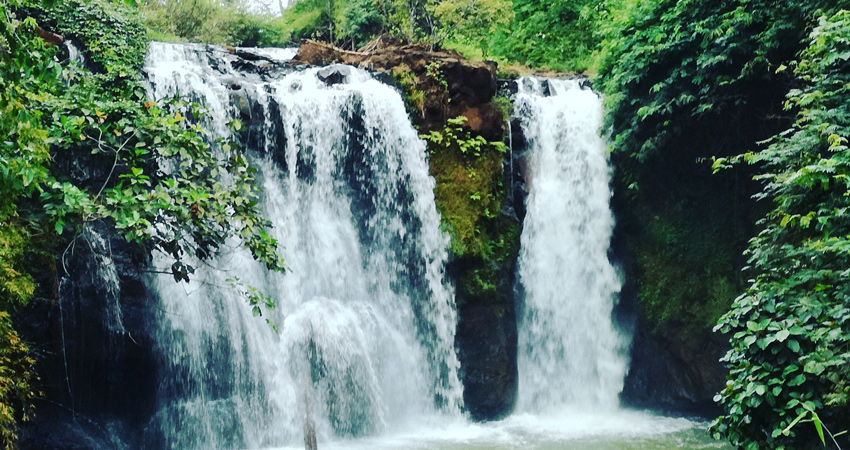
Location: 6km from Banlung
Open: 7:00 AM – 5:00 PM
Uniqueness: Surrounded by rubber plantations and suspension bridges.
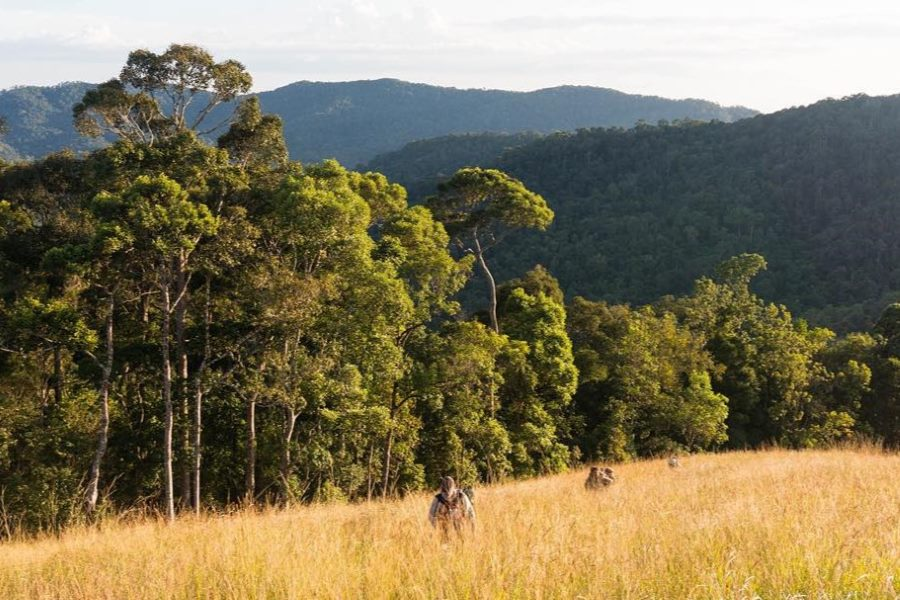
Location: Border of Laos/Vietnam
Open: Best with a guide (Day trips)
Uniqueness: One of the largest protected wildernesses in Cambodia.
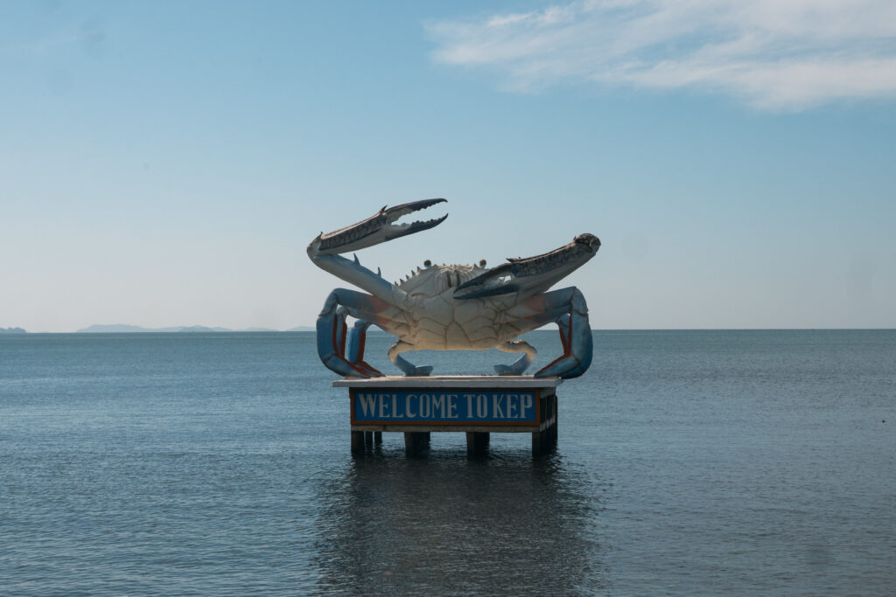
Coastal Charm
Fresh seafood, sea breeze, and peaceful views.
Kep: The Elegant Retreat
Kep is Cambodia's most tranquil seaside destination, known for its nostalgic charm and
world-famous seafood. Originally founded as a prestigious retreat for the French elite, it
offers a slower pace of life where the main "event" is choosing a fresh crab at the Crab Market.
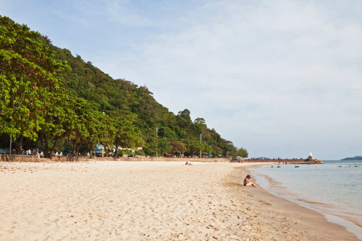
Location: Kep Town Center
Open: 24/7
Uniqueness: Calm crescent beach flanked by seafood shacks.
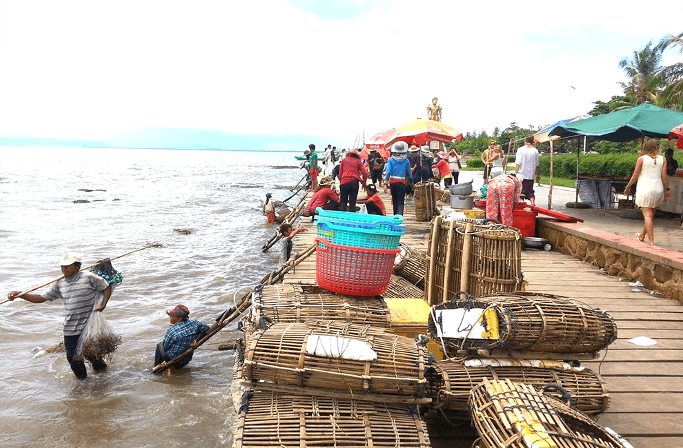
Location: Waterfront, Kep
Open: 6:00 AM – 8:00 PM
Uniqueness: Watch live crabs pulled directly from the ocean.
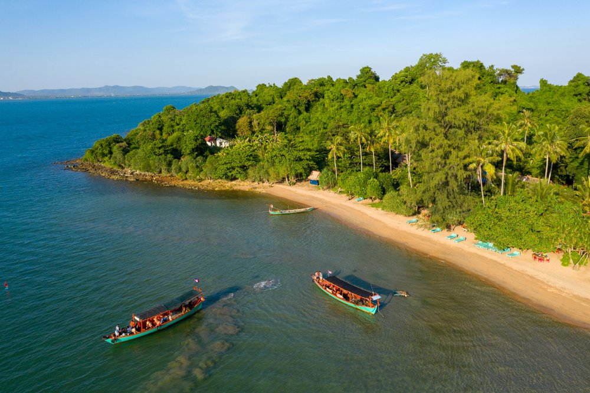
Location: Behind Kep Town
Open: Dawn to Dusk
Uniqueness: An 8km jungle loop with panoramic ocean views.
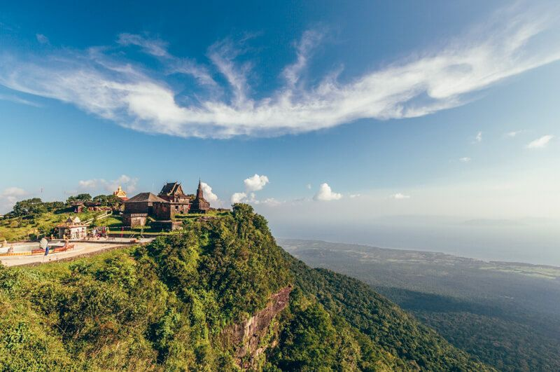
Riverside Beauty
Mountains, pepper farms, and calm rivers.
Kampot: The Riverside Sanctuary
Nestled along the Praek Tuek Chhu River and framed by the misty Elephant Mountains, Kampot is
famous for producing the world's best pepper. The town is a masterpiece of colonial architecture
now filled with cozy cafes and boutique stays.
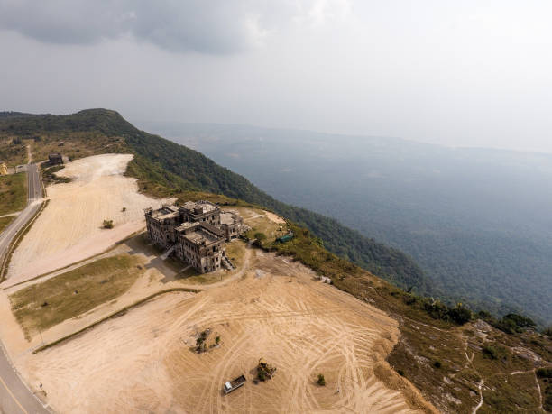
Location: Bokor National Park
Open: 8:00 AM – 5:00 PM
Uniqueness: An eerie, mist-covered French colonial ghost town.
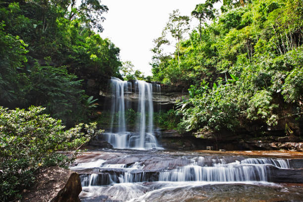
Location: Tada/Popokvil area
Open: 8:00 AM – 5:00 PM
Uniqueness: Refreshing jungle pools perfect for a hot day.
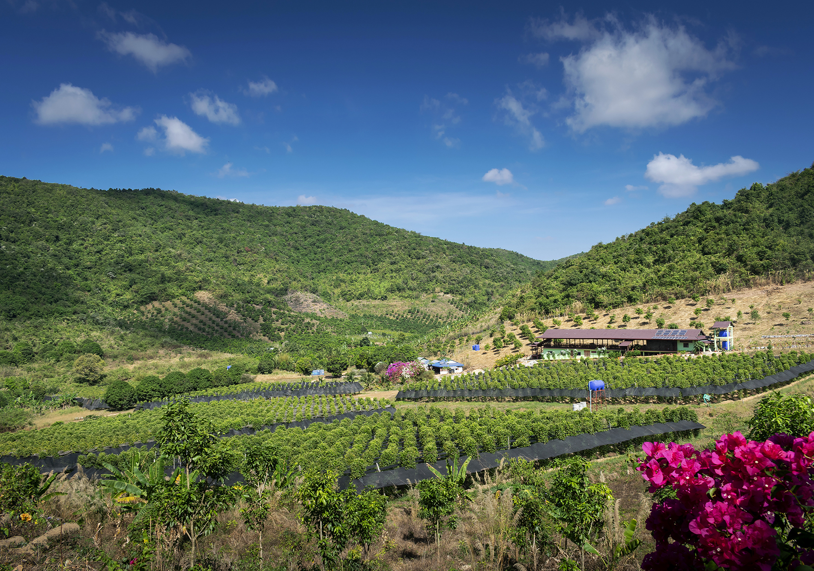
Location: Rural Kampot
Open: 9:00 AM – 5:00 PM
Uniqueness: Certified "champagne of pepper" known worldwide.

Cultural Heartbeat
Colonial charm, the unique Bamboo Train, and ancient cave formations.
Battambang: Cambodia's artistic sanctuary and the nation's legendary "Rice Bowl." Recently recognized as a UNESCO Creative City of Gastronomy, it is a paradise for foodies and culture seekers. From the quirky Bamboo Train to the haunting Bat Caves at sunset, Battambang provides a deep, authentic connection to Khmer history and modern creativity.
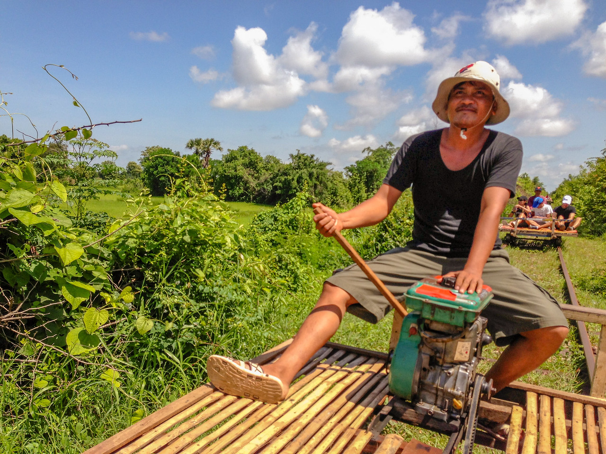
Location: 4km Southeast of city center
Open: 8:00 AM – 5:30 PM
Uniqueness: A DIY rail vehicle made of bamboo and small engines.
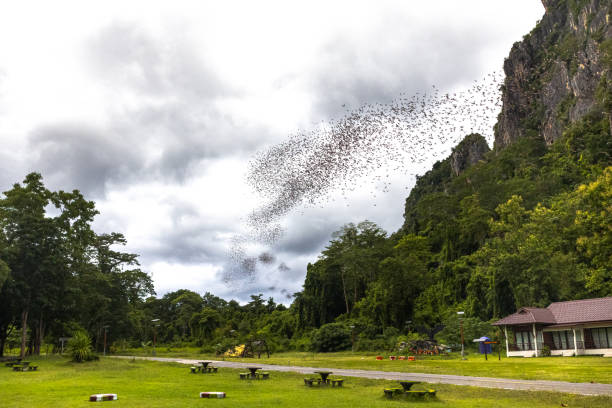
Location: 12km Southwest of the city
Open: 8:00 AM – 5:00 PM
Uniqueness: Millions of bats spiral out at sunset in a stunning display.
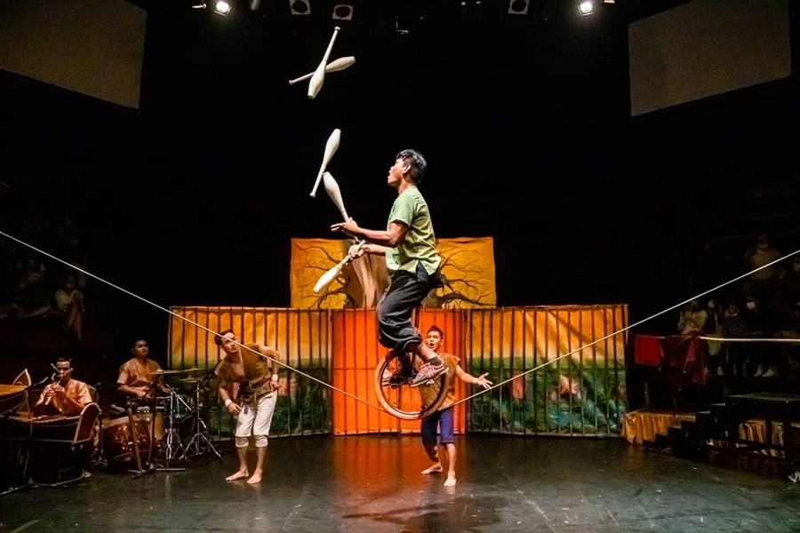
Location: Northwest edge of the city
Open: Evening shows (~7:00 PM)
Uniqueness: A world-renowned NGO circus blending acrobatics, theater, and music.
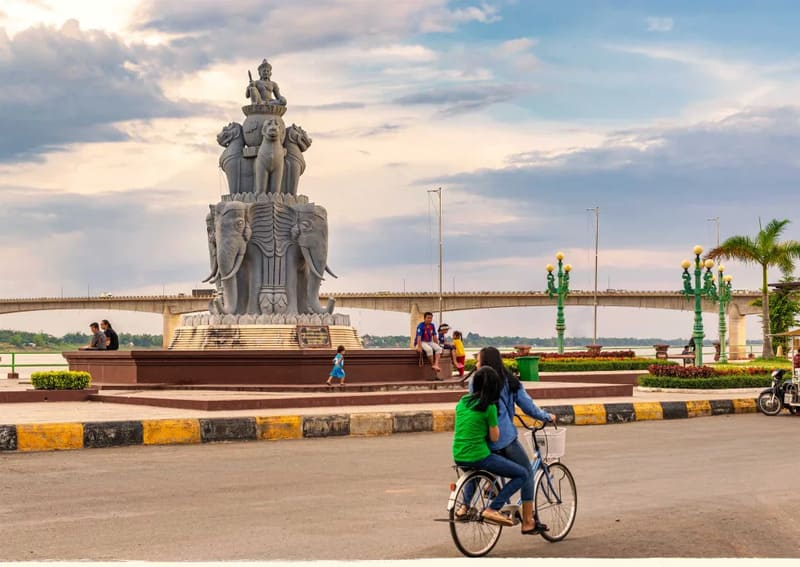
Riverside Heritage
Scenic river views, unique bamboo architecture, and ancient hilltop temples.
Kampong Cham: Known as the "Gateway to the East," it features wide riverside boulevards, peeling French colonial buildings, and a warm atmosphere. Whether crossing a handcrafted bamboo bridge or exploring ancient temples, Kampong Cham offers an authentic slice of Cambodian life that feels timeless and serene.
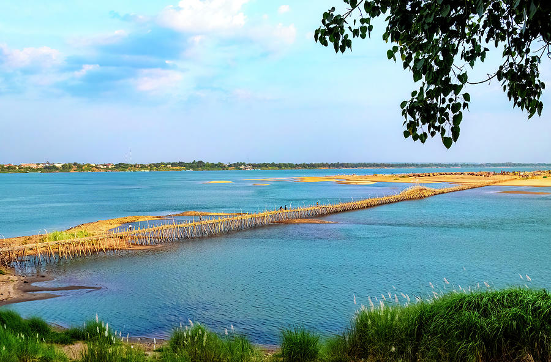
Location: Mekong River bank, Kampong Cham Town
Open: 6:00 AM – 6:00 PM (Best Nov–May)
Uniqueness: Built by hand from bamboo poles — torn down and rebuilt every year!
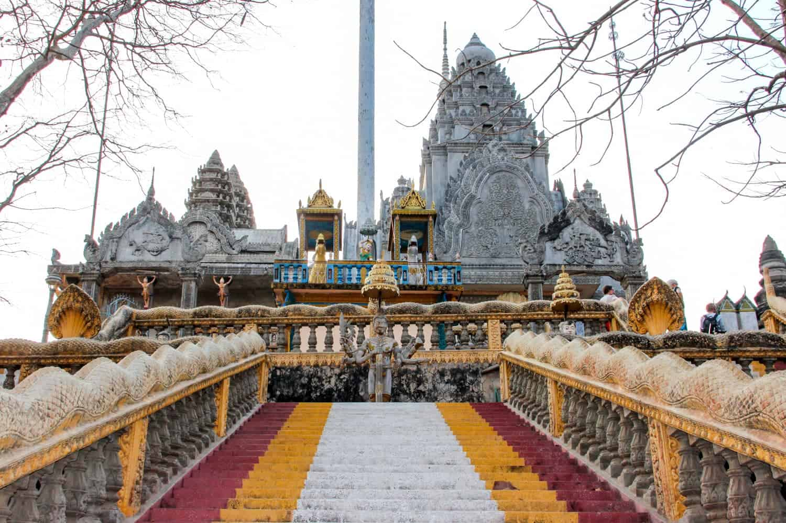
Location: 7km from the provincial town
Open: 7:00 AM – 6:00 PM
Uniqueness: Two legendary hills from a myth about men vs women. (The women won!)
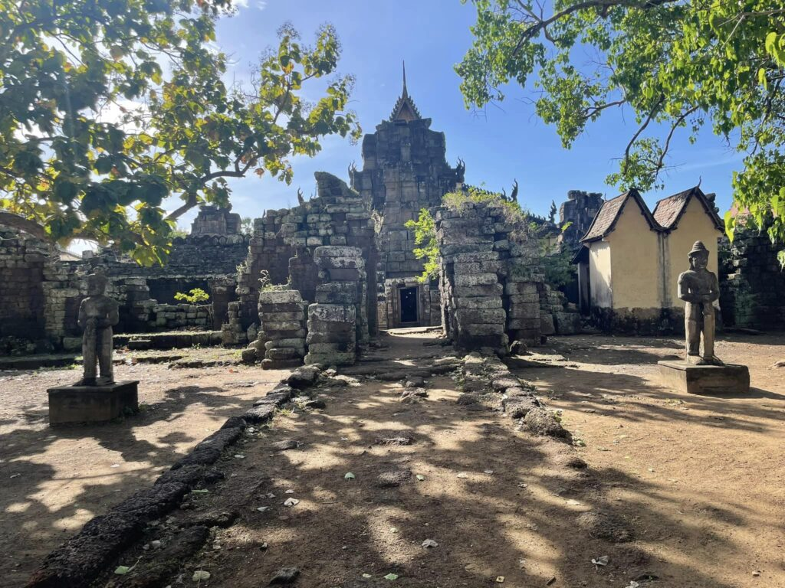
Location: 2.2km from the city center
Open: 8:00 AM – 5:00 PM
Uniqueness: A modern pagoda built inside 11th-century Angkorian ruins.
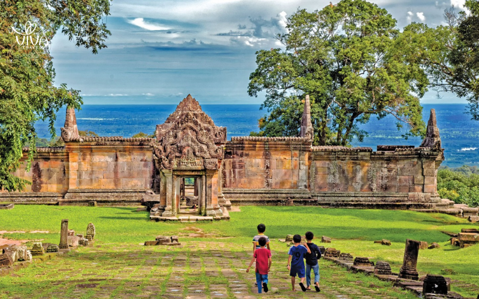
The Temple in the Clouds
Stunning cliff-top views, ancient stairways, and a unique north-south temple axis.
Preah Vihear: The crown jewel of Cambodia's northern highlands. Home to two UNESCO World Heritage sites — the cliff-top Preah Vihear Temple and the mysterious pyramid of Koh Ker — a testament to the architectural daring of the Khmer Empire.
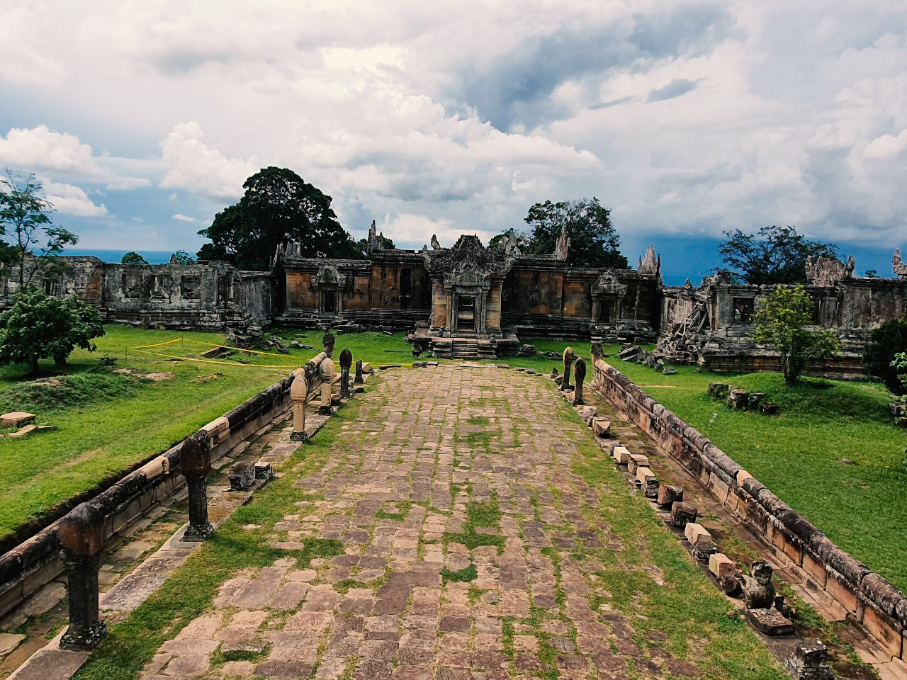
Location: Atop Poy Tadi Cliff, Dângrêk Mountains
Open: 7:00 AM – 5:00 PM
Uniqueness: UNESCO site perched 525m above the plains on a unique north-south axis.
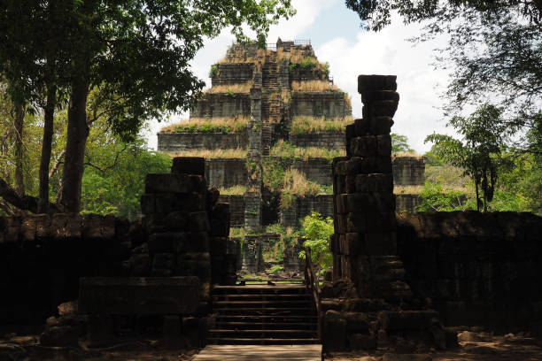
Location: Srayang Commune, Kuleaen District
Open: 7:00 AM – 5:30 PM
Uniqueness: Home to Prasat Prang, a 35m-high seven-stepped pyramid.
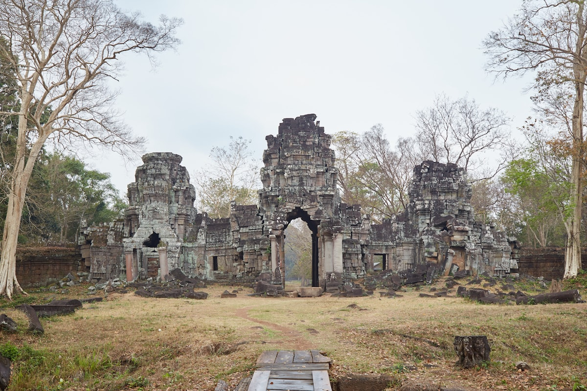
Location: Sangkum Thmei District
Open: 7:00 AM – 5:00 PM
Uniqueness: One of the largest temple complexes ever built during the Angkorian era.
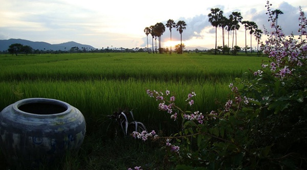
Cradle of Civilization
Ancient pre-Angkorian ruins, scenic mountain climbs, and a sprawling wildlife sanctuary.
Takeo: Widely celebrated as the "cradle of Khmer civilization," home to some of the country's oldest archaeological treasures dating back to the pre-Angkorian Funan and Chenla eras. A perfect spot for history lovers and weekend explorers alike.
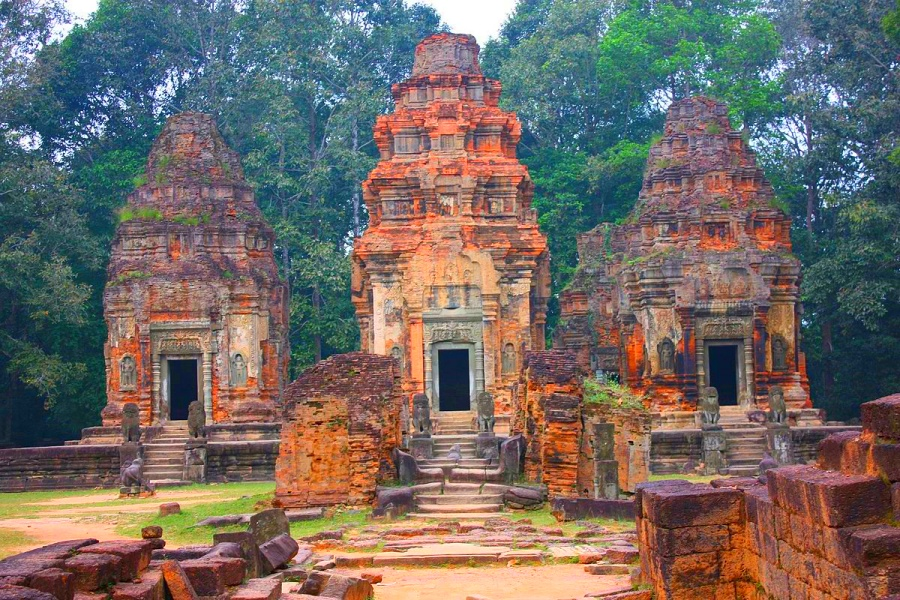
Location: 27km North of Takeo Town
Open: 7:00 AM – 5:00 PM
Uniqueness: An 11th-century mountain temple reachable by climbing 503 steps.
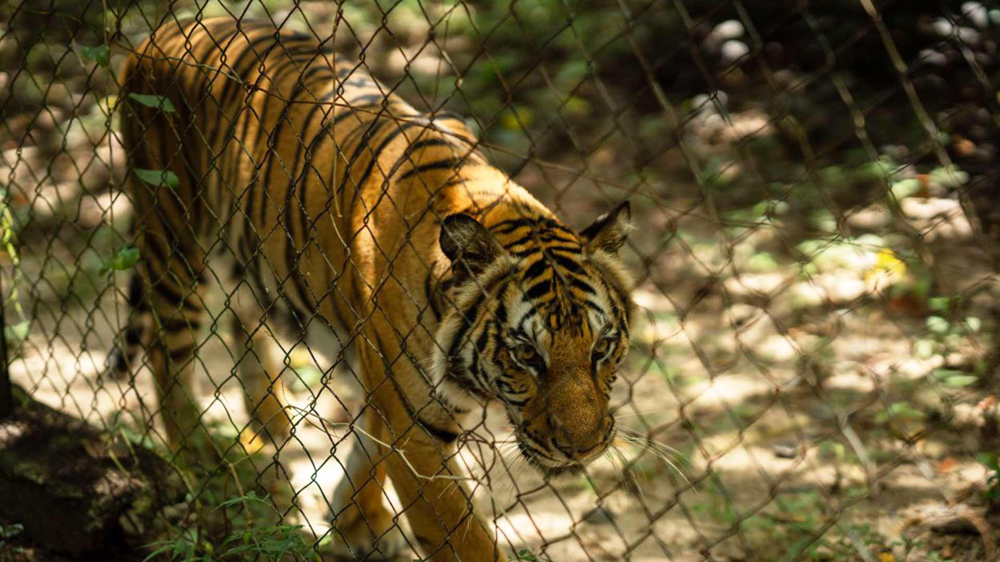
Location: Bati District (off National Road 2)
Open: 8:00 AM – 5:00 PM
Uniqueness: The largest zoo in Cambodia — sanctuary for rescued tigers, sun bears, and elephants.
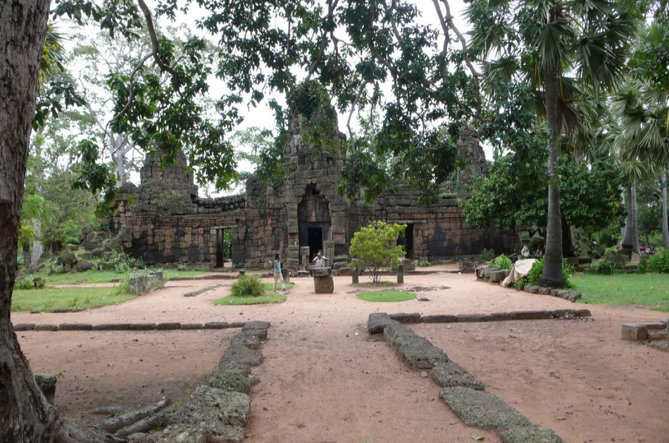
Location: 35km south of Phnom Penh, Bati District
Open: 7:00 AM – 6:00 PM
Uniqueness: A beautiful lake with over-water bamboo shacks next to a 12th-century Angkorian temple.
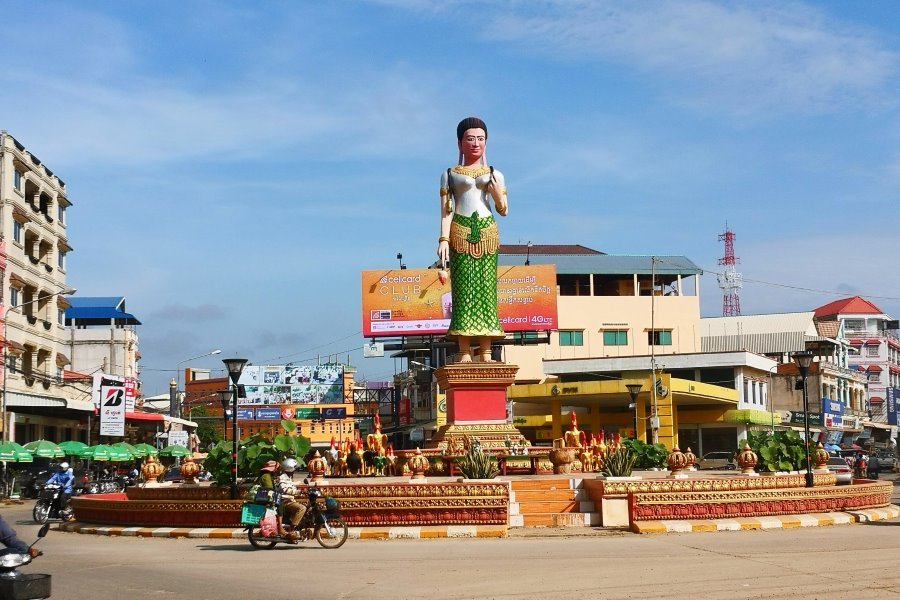
The Silent Sentinel
Massive stone face-towers, intricate bas-reliefs, and rare crane sanctuaries.
Banteay Meanchey: Cambodia's northwestern "Fortress of Victory," its true soul lies in the silent, moss-covered stones of Banteay Chhmar — a temple complex that rivals Angkor in beauty but without the crowds. A land of vast wetlands, golden rice fields, and ancient legends.
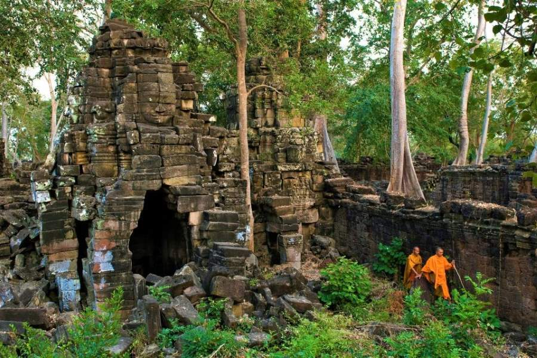
Location: Thma Puok District (60km north of Sisophon)
Open: 7:30 AM – 5:30 PM
Uniqueness: Rare Bayon-style face-towers and a massive wall of multi-armed Avalokitesvara.
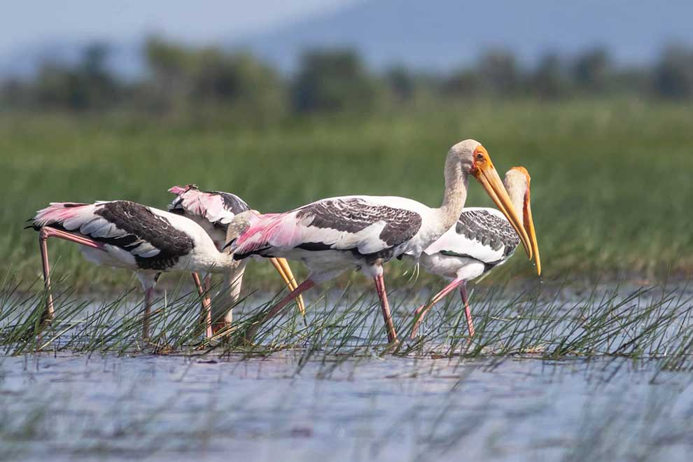
Location: Phnom Srok District
Open: Best at dawn (5:30 AM – 8:00 AM)
Uniqueness: Critical wetland for the endangered Sarus Crane and rare Eld's Deer.
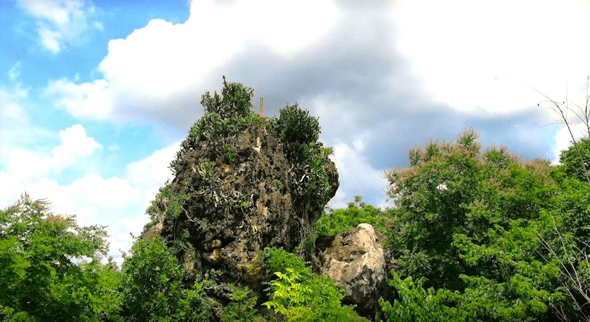
Location: Serei Saophoan City (Sisophon)
Open: 24/7 (Best for sunrise/sunset)
Uniqueness: Twin limestone mountains with a 360° view and a colorful hilltop pagoda.
Angkor Wat
Independence Monument
Koh Rong
Fun Fact: "Siem Reap" literally means "Siam Defeated," commemorating a 16th-century Khmer victory over the Thai army. Home to the world's largest religious monument — Angkor Wat!
Fun Fact: Named after Lady Penh, who found four Buddha statues in a floating tree and built a hill (Phnom) and a temple (Wat Phnom) to house them.
Fun Fact: Built in the 1950s as Cambodia's only deep-sea port. Named after King Norodom Sihanouk, fondly remembered as the "Father of Independence."
Fun Fact: Ratna (Gem) + Kiri (Mountain) in Sanskrit — "Gem Mountain," famous for rare blue zircons and volcanic soil.
Fun Fact: The smallest province in Cambodia! Once the most prestigious beach resort for the French and Khmer elite — "The Saint-Tropez of Southeast Asia."
Fun Fact: Kampot Pepper was the first Cambodian product to receive "Geographical Indication" (GI) status — the same protection as Champagne in France. Top chefs consider it the world's best pepper!
Everything you need to know before coming to Cambodia.
Most travelers need a visa. ASEAN citizens can enter visa-free for 14–30 days. Everyone else can apply for an E-Visa online ($36) or get a Visa on Arrival ($30) at the airport.
Pro Tip: Complete your e-Arrival Card online within 7 days before you land!
Cambodia uses a dual-currency system: US Dollars (USD) and Cambodian Riel (KHR). $1 ≈ 4,000 Riel. You pay in dollars and get small change back in Riel.
Pro Tip: Keep your US bills crisp and clean — banks may reject torn or old notes.
The easiest way is by Tuk-Tuk! Download Grab or PassApp for fixed prices without haggling. Most short city rides cost $1–$3.
Yes! At sacred sites like Angkor Wat or the Royal Palace, you must cover your shoulders and knees. A shawl over a tank top may be rejected — wear a T-shirt and long pants or skirt to ensure entry.